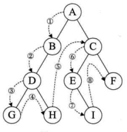

概念：
- 树：n个结点的有限集
- 度：结点拥有的子树数称为结点的度；树的度是树的各个结点的度的最大值；度为0的结点称为叶节点或终端结点
- 结点的层次：从根开始定义，根为第一层，以此往下推
- 树的深度或高度：树中结点的最大层次
- 有序树：如果讲树中结点的各子树看成是从左到右有次序的，不能互换的就是有序树——？
- 子树一定是互不相交的
树的存储结构：
- 双亲表示法：在每个结点中附加一个指示其双亲位置的下标，缺点：——
- 孩子表示法
- 孩子兄弟表示法：
二叉树：是n个结点的有限集合，该集合或者为空，或者由一个根节点和两棵互不相交的分别称为根节点和左右子树的二叉树组成。包含两个子节点，每个子节点都区分为左子节点和右子节点；
- 特点：
- 每个结点最多有两棵子树，所以二叉树中不存在大于2的结点
- 左子树和右子树是有顺序的，次序不能任意颠倒
- 即使树中某结点只有一棵子树也要区分是左子树还是右子树
- 五种基本形态：
- 空二叉树——？和只有一个根结点有什么区别？
- 只有一个根节点
- 根节点只有左子树
- 根节点只有右子树
- 根节点既有左子树又有右子树
- 特殊二叉树：
- 斜树
- 左斜树：所有节点都只有左子树的二叉树
- 右斜树：所有结点都只有右子树的二叉树
- 满二叉树：如果所有分支结点都存在左子树和右子树，且所有叶子都在同一层上；
- 叶子只能出现在最下一层，出现在其他层就不可能达成平衡
- 非叶子结点的度一定是2，否则就是缺胳膊少腿了
- 在同样深度的二叉树中，满二叉树的结点个数最多，叶子数最多
- 完全二叉树：对一棵具有n个结点的二叉树按层序编号，如果编号为i的结点与同样深度的满二叉树中编号为i的结点在二叉树中位置完全相同，则这棵二叉树称为完全二叉树。与满二叉树的区别在于，满二叉树都有两个叶子节点，完全二叉树可以只有一个
- 是一个二叉树且第i+1层有2^i个节点
- 满二叉树一定是完全二叉树，但完全二叉树不一定是满二叉树
- 在该树中所有的非终端节点都有两个子节点，所有的叶节点都位于同一层次
- 同样结点数的二叉树，完全二叉树的深度最小
- 性质：一个重要性质是叶节点的数量
- 在二叉树的第i层上至多有2^(i-1)个结点（i>=1）
- 第一层有1个结点（根节点）：2^(1-1)=1
- 第二层有2个结点：2^(2-1)=2；
- 第三层有四个结点：2^(3-1)=4;
- 以此类推
- 深度为k的二叉树至多有2^k-1个结点
- 对任何一棵二叉树T，其终端结点数为n0，度为2的结点数为n2，则n0=n2+1
- 具有n个结点的完全二叉树的深度为|log2 n|+1
- 对一个有n个节点的完全二叉树（其深度为|log2 n|+1）的结点按层序编号(从第1层到|log2 n+1|层，每层从左到右)，对任一结点i（1<=i<=n）有：
- 如果i==1，则结点i是二叉树的根，无双亲；如果i>1，则其双亲是结点 |i/2|
- 如果2i>n，则结点i无左子结点(即为叶子结点)，否则其左子节点是结点2i（2i=n的情况）
- 如果2i+1>n，则结点i无右子结点，否则其右子结点是结点2i+1
- 二叉树的存储结构：
- 顺序存储结构：可以给结点按层序编号，顺序存储结构一般只用于完全二叉树
- 二叉链表：设计一个数据域和两个指针（两个子节点）域为二叉链表；三个指针域(两个子节点和一个父节点)为三叉链表
- 二叉树遍历：是指从根结点出发，按照某种次序依次访问二叉树中所有结点，使得每个结点都被访问一次且仅被访问一次，下图依次为深度优先遍历（前，中，后）和广度优先遍历
- 深度优先遍历：所谓的前序中序后序都是以根节点为准
- 前序遍历：先访问根节点，然后前序遍历左子树，再前序遍历右子树
- 中序遍历：从根节点开始（注意不是从根结点开始遍历）先中序遍历根节点的左子树，然后是访问根节点，最后中序遍历右子树
- 后序遍历：从左到右先叶子结点后结点的方式遍历访问左右子树，最后访问根节点
- 广度优先遍历：从树的第一层也就是根节点开始，从上而下逐层遍历，在同一层中，按从左到右的顺序对结点逐个访问



- 线索二叉树——？
查找：
- 静态查找：只做查找
- 动态查找：在查找过程中同时插入查找表中不存在的数据元素，或者从查找表中删除已经存在的某个数据元素
查找结构：
- 顺序查找（线性查找）：从第一个开始逐次与给定值比较，直到找到要查找的记录；时间复杂度：O(n)
- 技巧：设置哨兵值免去了在查找过程中的每一次比较，但怎样设置这个哨兵值是个问题，如果专为哨兵值而移动数组中的每一个元素则有些舍大取小了，不过这是一个非常好的编码技巧
- 有序表查找：
- 二分查找：
- 前提是线性表中的数据是有序的，线性表必须采取顺序存储；
- 基本思想是：在有序表中取中间记录作为比较对象，若给定值与中间记录的关键字相等则查找成功；若小于则在左半区查找，若大于则在右半区查找
- 时间复杂度：O(logn)
总共有n个元素，循环：n,n/2,n/4, ...n/2^k
由于n/2^k取整后>=1, 即令n/2^k=1， k=log2n （以2为底，n的对数）
- 插值查找：——？
- 斐波那契查找：——？
- 线性索引查找：将线性索引项集合组织为线性结构，也称为索引表——？
- 稠密索引：在线性索引中将数据集中的每一个记录对应一个索引项；对稠密索引来说，索引项一定是按照关键码有序的排列
- 分块索引：把数据集的记录分成若干块，
- 这些块满足两个条件：
- 块内无序：每一块内的记录不要求有序
- 块间有序：例如第二块所有记录的关键字均要大于第一块中所有记录的关键字，以此类推
- 每一块对应一个索引项，这种索引方法叫做分块索引，分块索引的索引项结构分三个数据项：
- 最大关键码：它存储每一块中的最大关键字，这样的好处是可以使得在它之后的下一块中的最小关键字也能比这一块最大关键字大
- 存储了块中的记录个数，以便于循环时使用
- 用于指向块首数据元素的指针，便于开始对这一块中记录进行遍历
- 时间复杂度：
- 倒排索引
- 动态查找表：在查找时插入或删除的查找表称为动态查找表
- 二叉查找树（有序二叉树/二叉排序树/BST树）：或者是一个空树，或者具有以下特性：
- 特性：
- 如果它的左子树不为空，则左子树上所有结点的值均小于它的根结构的值；
- 如果它的右子树不为空，则右子树上所有结点的值均大于它的根结点的值
- 它的左右子树也是二叉排序树
- 二叉查找树不一定是完全二叉树，左右子树有可能为空
- 实现：可以通过两种方式实现：数组和链接结构
- 查找：
- 遍历：可以解释为把所有节点放在一条线上，即将树线性化；
- 广度优先遍历：从最低层（最高层）开始，向下（或向上）逐层访问每个节点，在每一层次上从左到右或从右到左访问每个节点
- 深度优先遍历：尽可能向左或向右进行。遍历方式总共有3!=6种。如果规定访问总是从左向右移动，遍历方式有三种：前序遍历VLR，中序遍历LVR，后序遍历LRV
- 删除：节点左子树最右侧的节点作为右子树的父节点
- 二叉查找树应用场景并不多，但以二叉查找树为基础的平衡二叉树和红黑树使用范围比较广
- 平衡二叉树（AVL树）：首先是二叉查找树，树中任一节点的两个子树高度差为0或1。是一种高度平衡的二叉排序树
- 两个概念：
- 平衡因子BF：二叉树上结点的左子树深度减去右子树深度的值称为平衡因子。平衡二叉树上平衡因子的值只可能是-1,0,1
- 最小不平衡子树：距离插入结点最近的，且平衡因子的绝对值大于1的结点为根的子树称为最小不平衡子树
- 什么是树的高度平衡？ 意节点到达其任意叶子节点的路径长度均相同，也即任意叶子节点的深度是相同的
- 实现原理：在构建二叉排序树的过程中，每当插入一个节点时先检查是否因插入而破坏了数的平衡性，若是则找出最小不平衡树，在保持二叉排序树特性的前提下调整最小不平衡树中各节点之间的链接关系，进行相应的旋转，使之成为新的平衡子树
- 旋转规则：
- 平衡因子的绝对值大于1为右旋转，小于1为左旋转
- 最小不平衡子树的根节点和它的子结点（离得最近的）符号都是相同的，不能直接旋转，需要先统一符号，目前的做法是旋转（距离最小不平衡树的根节点）子结点使与最小不平衡树的根节点保持一致
- 时间复杂度：
- 查找：O(logn)，插入和删除都是O(logn)
- 多路查找树：每一个结点的子节点数可以多于两个，且每一个节点处可以存储多个元素。四种特殊形式：2-3树，2-3-4树，B树，B+树
- 2-3树：每个结点都有2个（2结点）或3个子结点（3结点）
- 概念：
- 一个2结点包含一个元素和两个子结点，或没有子结点，不能只有一个子结点；左子树的元素小于该元素，右子树包含的元素大于该元素
- 一个3结点包含一大一小两个元素，要么有三个子结点，要么没有子结点，左子树包含小于较小元素的元素，右子树包含大于较大元素的元素，中间子树包含介于两元素之间的元素
- 2-3树中所有的叶子结点都在同一层次上
- 插入：插入操作一定发生在叶子结点上
- 2-3-4树：就是对2-3树的概念扩展，包括了四个结点的使用，一个四节点包括小中大三个元素和四个子结点，一个四节点要么没有子结点，要么有四个子结点
- B树：是一种平衡的多路查找树，2-3树和2-3-4树都是B树的特例，结点最大的孩子数目是B树的阶，因此2-3树是3阶B树，2-3-4树是4阶B树。
- 一个m阶B树的属性：
- 如果根节点不是叶节点，则其至少有两棵子树
- 每一个非根的分支结点都有k-1个元素和k个子结点，其中【m/2】<=k<=m
- 所有叶子结点都位于同一层次
- 红黑树（R-B树）：既是二叉查找树，也是2-3树。红黑树的每个结点都有存储位表示结点的颜色，可以是红或者黑。树中每个结点包括5个属性：color，key，left，right，p；如果一个结点没有子结点或父节点，则该节点相应指针属性的值为NIL. https://www.jianshu.com/p/e136ec79235c
- 特点：
- 每个结点或者是黑色，或者是红色
- 根节点和每个叶节点是黑的
- 如果一个结点是红的，则它的两个子结点都是黑的——如果一个结点是黑色，它的两个子结点要求是红色吗？
- 对每个结点，从该节点到其所有后代叶节点的简单路径上均包含相同数目的黑结点——完美黑色平衡
- 概念：
- 黑高：从某个结点x出发到达一个叶节点的任意一条简单路径上的黑色结点个数称为该节点的黑高；红黑树的黑高为其根节点的黑高
- 定理：
- 一棵有n个内部结点的红黑树的高度至多为2lg(n+1)
- 自适应树：
- 堆：特殊的二叉树
- 两个性质：
- 每个节点的值大于等于（小于等于）其每个子节点的值；
- 该树完全平衡，最后一层的叶子处于最左侧的位置
- 注：同辈节点之间、叔侄节点之间的关系并未确立
- 堆可以实现优先队列：(1). 添加元素：将元素作为最后一个节点插入堆的末尾，然后根据堆的性质进行移动；(2).删除元素：(优先队列)因为堆的根元素优先级最高，所以删除根元素，然后将最后一个元素放到根节点上，再根据堆的性质向下移动元素。
treap树：
多路查找树：
B树：一种平衡的多路查找树，结点最大的孩子数目称为B树的阶
一个m阶的B树具有如下属性：
- 如果根节点不是叶节点，则至少有两课子树
- 每一个非根的分支节点都有k-1个元素和k个孩子，。。。
- 所有叶子结点都位于同一层次